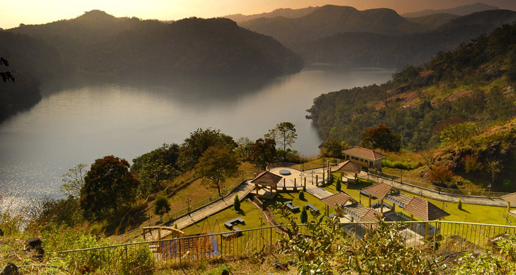

1. Munnar
Munnar an enchanting hill station with enclosed calm of serenity and beauty draws thousands of tourists from different parts of the world. This heavenly beautiful hill station of Kerala situated at an altitude of about 1600 meter from the sea level was once the summer resort of British government in South India. The colonial Bungalows in Munnar reflects the glorious past of the place.
The pleasant climate and the laid back attitude of the hills made it an ideal holiday spot.
The cool climate and the romantic ambiance of Munnar made it one of the most preferred honeymoon destination in South India.
Munnar lies at Idukki district in the confluence of three rivers Muthirapuzha, Nallathanni and Kundala.
The valleys in Munnar covered with coffee, tea and spice plantations, the mountain streams, wide variety of flora and fauna is a delight to watch. Neelakurinji flower one of the rarest and most beautiful flower which blooms once in twelve years is found here. When it blooms it covers the entire region with its beautiful violet colour.
Some of the must visit places in and around Munnar include Eravikulam National Park, Pothamedu, Mattupetty, Devikulam, Pallivasal, Chinnakanal, Tea Museum, Attukal etc.

2. Thekkady
Thekkady is a naturally beautiful land located on Idukki district of Kerala. It’s a place full of surprises. Nature has blessed this place with all beautiful attractions. You will be amused by the scenic spots, clear waterways and the peaceful ambiance of Thekkady. A walk through the spice scented plantations of Thekkady enjoying the green valleys and the chilling weather will be an unforgettable experience.
One unique thing about Thekkady is that this is the only place where you can witness wildlife in close quarters.
Thekkady is one of the finest natural wildlife reserve in the world.
You can see large herd of elephants playing in the lake, tigers and so many other animals and birds in Thekkady.
Thekkady is an ideal place for adventure tourism.

3. Ilaveezhapoonchira
Ilaveezhapoonchira situated atop Kudayathoor Mala is one of the most excellent places in Idukki district of Kerala to witness the sunrise and sunset. Ilaveezhapoonchira literally means pond of flowers atop a hill where no leaves fall. This is true as there is no trees around and only green grassland. This is a wonderful picnic spot situated in the midst of the fabulous hillocks.
The velvet valleys of Ilaveezhapoonchira spreads across thousands of acres.
The green landscape punctuated by gigantic hills with enclosed calm and serenity is an ideal place to relax.
This beautiful spot is surrounded by three enchanting hillocks Mannakunnu, Kodayathoormala and Thonippara.

4.Hill View Park
As the name suggests the sight from this park explores a vast area of the beautiful land unlike from any high mountain park. Spread over an area of 8 acres of land this beautifully designed park has a natural water body at the hilltop.
One can also see Wild elephants in their natural habitat. This park is situated close to Idukki Arch Dam and Cheruthoni Dam. The park has a herbal garden and children's play area. You can enjoy pedal boating facility in Hill View Park.

5.Idukki Arch Dam
Idukki Arch Dam constructed across the Kuravan and Kurathi hills is the world's second and Asia's first arch dam. The Idukki Dam is situated near the Cheruthoni barrage and extents to an altitude of 550 ft with a width of 650 ft. This huge wonderful dam is a unique, fascinating site in Idukki.
There is an interesting story behind the origin of the dam. It is believed that Lord Rama cursed two natives Koravan (man) and Korathi (woman) to stones for staring at Sita while she was bathing. They begged Rama for Mercy as they never stayed separate. Lord Rama then blessed them that they will stay together for the years to come.
It's the Arch Dam, which connects the two hillocks Kuravan Mala and Kurathi Mala together. The Natives in here believes that its dam which reunites them. Kulamavu Dam, and Idukki Wildlife Sanctuary is located nearby Idukki Arch Dam. There is an option for pedal boating in the dam.